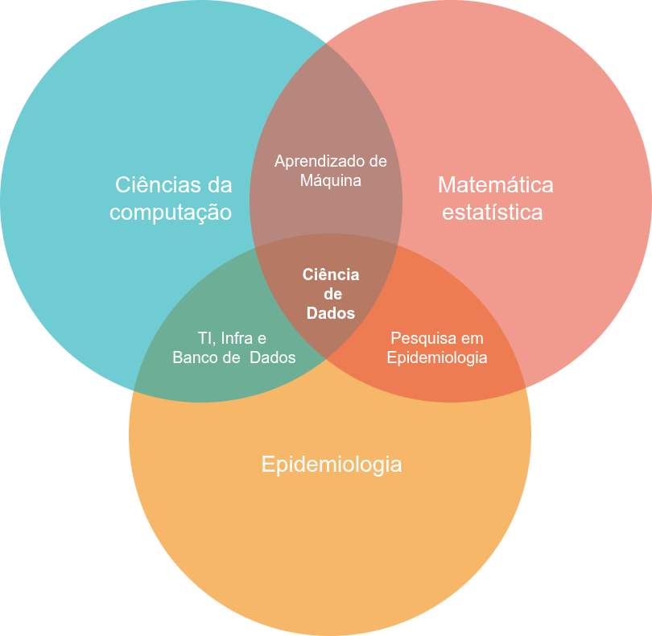
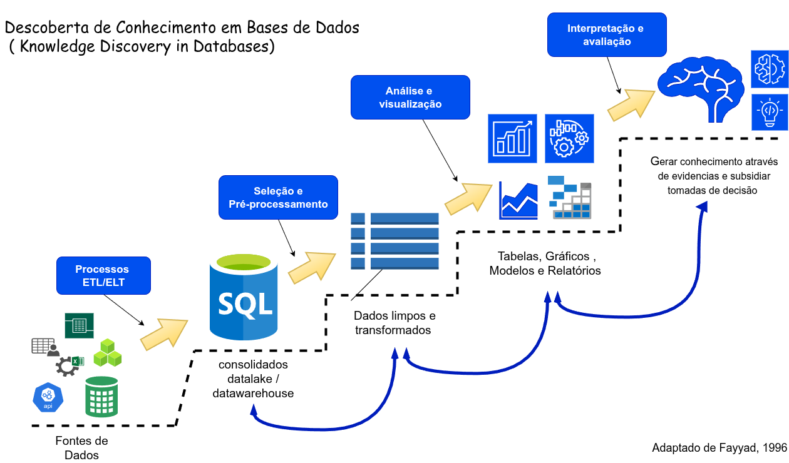
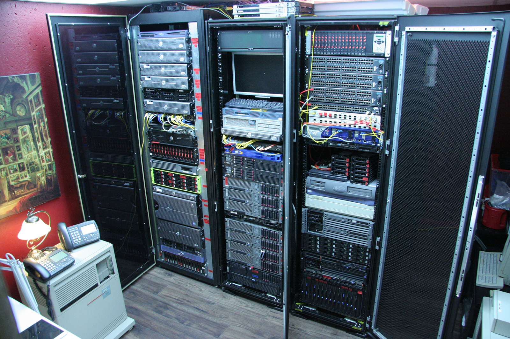
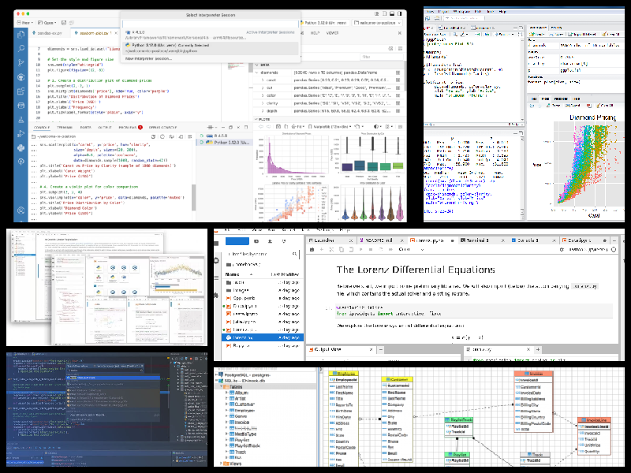
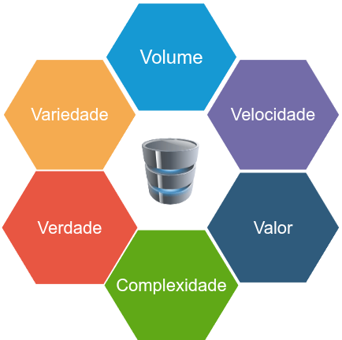
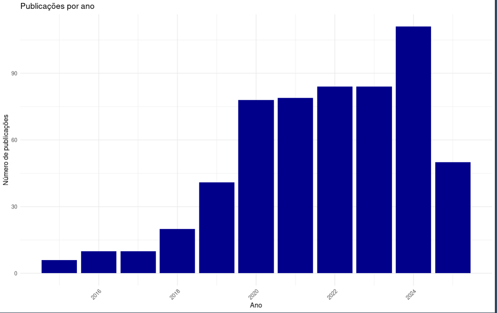
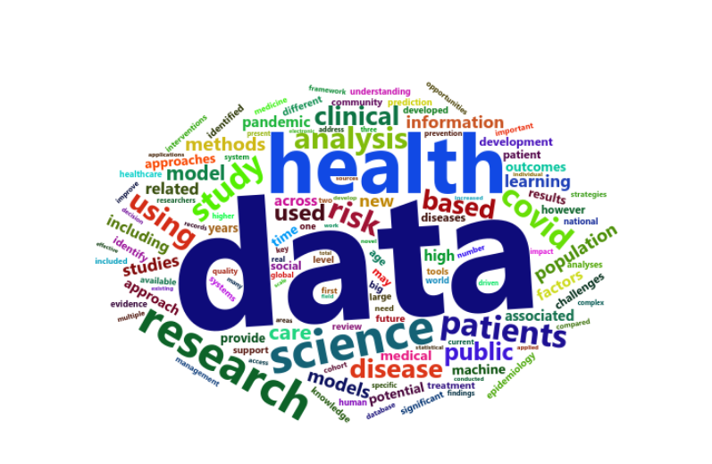
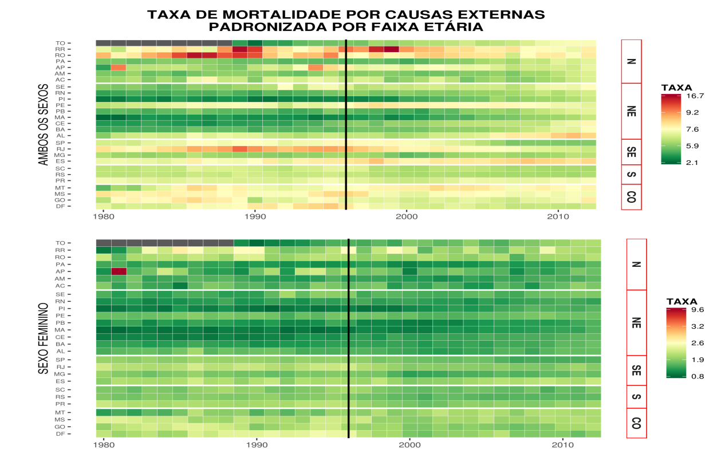
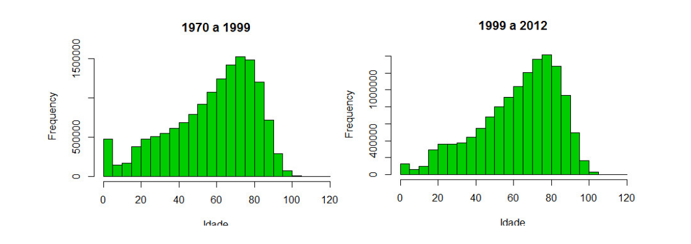

1 Introdução à Ciência de Dados em Epidemiologia
1.1 O que é Ciência de Dados?
A Ciência de Dados é uma área interdisciplinar que combina conhecimentos de diversas áreas com o principal objetivo de transformar dados em informações úteis para a tomada de decisões.
A Ciência de Dados não é tão nova quanto se imagina. Suas raízes remontam à estatística e à análise de dados, já existindo desde a década de 1970 em computação cientifica em diversas instituições e universidades. Recententemente, ganhou muito destaque com o aumento da disponibilidade de grandes volumes de dados e avanços em tecnologias de computação.
A Ciência de Dados é uma evolução resultante da integração de várias disciplinas, incluindo:
- Estatística (análise de dados tradicional)
- Banco de Dados (dados estruturados e não estruturados)
- Data Mining (mineração de dados)
- Machine Learning (aprendizado de máquina)
- Big Data (grandes volumes de dados)
- Inteligência Artificial (IA)
- Visualização de Dados (apresentação de dados)
- Engenharia de Dados (preparação e integração de dados)
1.1.1 E na epidemiologia?
Vivemos um momento crítico em que o cenário epidemiológico é cada vez mais desafiador, com epidemias sobrepostas e mudanças climáticas. Ao mesmo tempo, temos uma enorme produção de dados administrativos e de vigilância, mas que ainda não são utilizados em todo o seu potencial.
Há uma necessidade de respostas baseadas em evidência que sejam rápidas e robustas, e neste ponto a Ciência de Dados pode ser muito útil.
Na epidemiologia, a Ciência de Dados combina com áreas como matemática, estatística, e ciências da computação para identificar padrões e extrair conhecimento a partir de dados.

Alguns exemplos de projetos que aplicam Ciência de Dados em Epidemiologia incluem:
- Centros de Inteligência Epidemiológica
- InfoGripe
- InfoDengue
- Mosqlimate
- PCDaS
1.2 O que é Pipeline de Dados?
Um projeto de Ciência de Dados é organizado seguindo um Pipeline de Dados, que é um fluxo automatizado de etapas desde a coleta/importação dos dados, passando pela transformação e análise de dados, até a visualização e comunicação.
Etapas comuns de um Pipeline de Dados incluem:
- Coleta de Dados: Capturar dados de fontes diversas: arquivos csv, dbf, APIs, bancos de dados, etc.
- Limpeza de Dados: Remover dados faltantes, duplicados, inconsistências e outliers.
- Transformação de Dados: Normalizar, padronizar, converter formatos, criar novas variáveis.
- Armazenamento de Dados: Guardar os dados em bases de dados, data lakes / data warehouse , armazenamento em nuvem, etc.
- Análise e Modelagem: Aplicar técnicas de análises estatísticas, machine learning, etc.
- Visualização e Comunicação: Criar relatórios, dashboards, infográficos e comunicar resultados.
1.3 KDD
Significa Descoberta de Conhecimento em Bancos de Dados (Knowledge Discovery in Databases), é um processo que envolve a extração de padrões e informações úteis e compreensíveis a partir de grandes volumes de dados.

1.4 Infraestrutura Necessária para Ciência de Dados
Para fazer Ciência de Dados, é essencial ter uma infraestrutura adequada, que permita o processamento e análise eficiente dos dados.
Umas dos principais requesitos é um servidor que vem a ser um computador especializado que fornece recursos, serviços ou dados a outros dispositivos chamados clientes. As principais características de um servidor são:
- Uso centralizado: Não é usado para tarefas individuais, mas para armazenar dados, executar aplicações e oferecer serviços a muitos usuários simultaneamente.
- Hardware especializado: Tem componentes otimizados para processamento de tarefas em larga escala, como processadores de alto desempenho, memória RAM de alta capacidade e armazenamento em disco de alto desempenho (geralmente espelhados, uso de RAID).
- Sem interface gráfica: Normalmente não tem monitor, teclado ou mouse. É controlado remotamente por meio de interfaces de linha de comando ou softwares de gerenciamento.
- Sistemas Operacionais: Roda SO específicos para servidores, como Linux, Unix, e o lixo do Windows Server, diponibilizando serviços tais como servidor web, banco de dados, arquivos em rede etc.
1.4.1 Componentes Principais de um Data Center
Aqui estão os principais elementos que compõem um Data Center:
- Servidores: São computadores especializados que executam aplicações, armazenam dados e processam requisições. Podem ser físicos (servidores de rack) ou virtuais (em nuvem).
- Redes: Switches, roteadores, firewalls e cabeamento garantem a comunicação entre servidores e clientes. As redes são altamente redundantes para evitar falhas.
- Armazenamento: Discos rígidos (HDD), SSDs, não-voláteis, bases de dados, data lakes e dados que podem também pode ser armazenamento em nuvem.
O que é RAID?
RAID (Redundant Array of Independent Disks) é uma tecnologia que combina vários discos rígidos em um único array (conjunto de discos rígidos conectados em paralelo, trabalhando juntos) para:
- Garantir redundância (cópias de dados em diferentes discos).
- Aumentar a velocidade de leitura e escrita.
- Proteger contra falhas (se um disco falhar, os dados ainda estão disponíveis).
- Melhorar a tolerância a falhas (continuidade do serviço).
- Sistemas de Refrigeração: Para manter os servidores refrigerados, pois eles geram muito calor durante o processamento.
- Energia e Backup: Sistemas de energia (como geração de energia, UPS, baterias) garantem que o Data Center nunca desligue. Sistemas de backup (cópias de segurança) protegem os dados contra perda.
- Segurança Física e Cibernética: Câmeras, sensores, portões eletrônicos, biometria para proteger o local físico. Firewalls, criptografia, autenticação de usuários para proteger os dados.
1.4.2 Centro de Dados no Local (On-Premise) vs Nuvem (Cloud)
O centro de dados no local, também chamado de on-premise, é uma infraestrutura de TI que fica em um local físico dentro um departamento ou unidade de uma instituição, geralmente em uma sala dedicada.
A nuvem é um modelo de armazenamento e processamento de dados em servidores remotos, geralmente gerenciados por provedores de nuvem como Amazon AWS, Microsoft Azure, Google Cloud etc… De onde os serviços são contratados e expandidos ou alterados conforme desejo (ou o bolso) do cliente.
1.4.2.1 Comparação: On-Premise vs Nuvem
| Critério | On-Premise (Centro de Dados no Local) | Nuvem (Cloud) |
|---|---|---|
| Controle sobre a infraestrutura | Alto (gerencia todos os recursos) | Baixo (provedor de nuvem gerencia a infraestrutura) |
| Custo inicial | Alto (compra de hardware, instalação, energia, etc.) | Baixo (não há investimento inicial significativo) |
| Custo operacional | Alto (manutenção, energia, pessoal especializado) | Baixo (custos sob demanda, modelos de assinatura) |
| Escalabilidade | Baixa (requer aquisição de novos recursos físicos) | Alta (escala automaticamente conforme necessidade) |
| Manutenção | Alta (empresa é responsável pela manutenção) | Baixa (provedor cuida da manutenção e atualizações) |
| Segurança | Maior controle, mas depende da implementação local | Depende do provedor e de suas medidas de segurança |
| Latência | Baixa (serviços locais) | Pode ser alta (depende da qualidade da conexão à internet) |
| Acesso aos dados | Acesso local (requer estar no mesmo local) | Acesso remoto (disponível a partir de qualquer lugar) |
| Flexibilidade | Baixa (configurações fixas e complexas) | Alta (recursos podem ser ajustados rapidamente) |
| Atualizações | Manuais, exigem planejamento e intervenção | Automáticas, gerenciadas pelo provedor |
| Dependência da internet | Baixa (funciona offline) | Alta (depende da conectividade e da nuvem) |
| Backup e recuperação | Gerenciado internamente, pode ser complexo | Gerenciado pelo provedor, geralmente automatizado |
| Uso comum | Empresas grandes, regulamentadas, sistemas críticos | Empresas de médio e pequeno porte, startups, aplicações web |
| Exemplos de provedores | Nenhum (Local) | AWS, Azure, Google Cloud, Oracle Cloud, IBM Cloud |
1.4.3 Como se parece um pequeno data center local.

1.5 Principais softwares e linguagens de programação utilizadas na Ciência de Dados
- R (estatística, matemática, análise e visualização de dados)
- Python (matemática, machine learning, IA, análise de dados)
- Sistema Gerenciador de Banco de Dados (SGBD)
- SQL (linguagem padrão para bancos de dados relacionais)
- Julia (alta performance, computação científica, estatística, matemática)
- Java / Scala (Apache Spark, Weka,etc…)
- SAS (old days mas ainda usado especialmente em setores regulamentados)
1.6 Principais IDEs em Ciência de Dados
Um IDE (Integrated Development Environment), ou Ambiente de Desenvolvimento Integrado, é um software que reúne em um só lugar as ferramentas essenciais para o desenvolvimento de códigos em uma determinada linguagem de programação.

- Rstudio (R)
- Positron (R, Python)
- Visual Studio Code (R, Python. Julia, SQL, etc…)
- PyCharm (python)
- Jupyter Notebook (Python, R, Julia)
- DBeaver (SQL)
- Colab (Google Colab)
1.7 Bases de Dados: Armazenando Informações
Uma Base de Dados é um conjunto organizado de dados, estruturado para facilitar o armazenamento, recuperação e manipulação de informações.
Tipos de Bases de Dados:
• Relacional (ex: MySQL, PostgreSQL, Oracle)
• NoSQL (ex: MongoDB, Cassandra)
O que é uma Base de Dados Relacional?
• Dados organizados em tabelas. • Relacionamentos entre tabelas são definidos por chaves primárias e estrangeiras. • Exemplo: Tabela de pacientes, tabela de internações, etc.
1.8 SGBD
O que é um Sistema Gerenciador de Banco de Dados (SGBD)?
Um Sistema Gerenciador de Banco de Dados (SGBD) é um software que permite criar, gerenciar, armazenar e recuperar dados de forma organizada, eficiente e segura.
O SGBD atua como um intermediário entre o usuário e o armazenamento físico dos dados (banco de dados), facilitando a criação, manipulação e consulta de dados.
1.9 Big Data os 3Vs e Banco de dados
Big Data (Dados em Grande Escala) refere-se a conjuntos de dados extremamente grandes e complexos que excedem a capacidade de processamento e armazenamento tradicionais de sistemas de informação. Esses dados podem ser estruturados (como tabelas em bancos de dados), semi-estruturados (como XML ou JSON) ou não estruturados (como textos, imagens, vídeos e áudios).
O termo Big Data surgiu com o aumento exponencial da geração de dados no mundo digital, impulsionado por tecnologias como redes sociais, sensores, dispositivos móveis, Internet das Coisas (IoT), e outras fontes de dados em tempo real.
No processamento de Big Data são necessárias o uso de ferramentas distribuídas, linguagens de programação e bibliotecas especializadas, bem diferentes do que estamos acostimados

Os 3Vs do Big Data
Os 3Vs são os três principais características que definem o Big Data. Eles foram introduzidos por Doug Laney, da Gartner, em 2001. Com o tempo, outros “V” foram adicionados, mas os três principais são:
Volume (Volume) • Refere-se à quantidade de dados gerados e acumulados. • Exemplo: Empresas geram petabytes de dados diariamente.
Velocidade (Velocity) • Refere-se à rapidez com que os dados são gerados e processados. • Exemplo: Dados de sensores, transações em tempo real, redes sociais.
Variedade (Variety) • Refere-se à diversidade de formatos e tipos de dados. • Exemplo: Dados estruturados (tabelas), semi-estruturados (JSON), e não estruturados (texto, imagens, vídeos).
Outros “3 Vs” (adicionais)
• Verdade (Veracity): Qualidade e confiabilidade dos dados.
• Valor (Value): A utilidade dos dados para a tomada de decisões.
• Complexidade (Complexity): A dificuldade de processar e analisar os dados
1.9.1 Quanto é um grande volume?
| Tamanho | Quantidade de filmes | Duração total (1 hora/filme) |
|---|---|---|
| 1 GB | 1 filme | ~1 hora |
| 1 TB | 250 filmes | ~10 dias |
| 1 PB | 250.000 filmes | ~28,5 anos |
1.9.2
1.10 Resultados/Aplicações
1.10.1 o que tem sido publicado?
~600 artigos nos últimos 10 anos buscando pelo termo ‘DATA SCIENCE’[TIAB] AND EPIDEMIOLOGY no pubmed.
 
1.10.2 Tese Mineração de dados na identificação de padrões de mortalidade no Brasil de 1979 a 2013:
Aluno: Davi Barroso Alves
Orientador: Oswaldo G. Cruz
Banco em postgresSQL criado a partit do SIM Brasil de 1979 a 2014
Linhas: ~ 35 milhões colunas:20, espaço em memoria ~ 4GB


1.11 Considerações finais
- Tornar-se um cientista de dados é um processo longo e exige dedicação e constante atualização.
- Uso de grandes bancos de dados exige uma combinação de software e hardware muito diferente do que os usuários estão acostumados a usar.
- Necessário conhecimento de linguagens de programação e bancos de dados SQL (ou NoSQL).
- Nenhum pacote estatístico por si só vai dar conta de criar, gerenciar e analisar dados.
- Necessário conhecimento aprofundado de estatística e ML.
“…if the quantity of information is increasing by 2.5 quintillion bytes per day, the amount of useful information almost certainly isn’t. Most of it is just noise, and the noise is increasing faster than the signal. There are so many hypotheses to test, so many data sets to mine but a relatively constant amount of objective truth.”
📚 Nate Silver, The Signal and the Noise: Why Most Predictions Fail – But Some Don’t
Penguin Press/Classics 2013